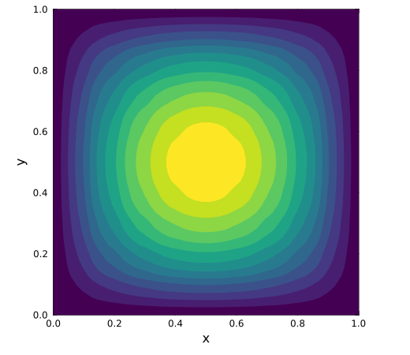

Kirchhoff plate
In this example we will solve a simply supported square Kirchhoff plate under uniform pressure. Plate bending needs second derivatives of the transverse displacement, so a $C^1$ basis is required. This example is for the purpose of demonstrating the use of IGA for plate bending problems that need second derivatives of the unknown field. With simple interior knots, a quadratic B-spline is $C^1$, signifying that IGA can represent the plate bending problem exactly.
It is expected that the reader already be familiar with IGA and the concept of "bezier extraction". It is also expected that the reader is familiar with the Ferrite package. In particular Ferrite.DofHandler and Ferrite.CellValues.
The weak form is
\[\int_\Omega \kappa(\delta w) : \mathbb{D} : \kappa(w)\, d\Omega = \int_\Omega \delta w\, q\, d\Omega,\]
where $\kappa(w) = -\nabla\nabla w$ is the curvature and $q$ is the pressure, subjected to
\[w = 0 \quad \text{on } \partial\Omega.\]
For Poisson ratio $\nu = 0.3$, the Navier center deflection is $w_\mathrm{ref} = 0.004062\, q a^4 / D$, with flexural rigidity $D = Eh^3/(12(1-\nu^2))$.
Start by loading the necessary packages
using Ferrite, FerriteIGA, LinearAlgebra, PlotsNext we define the function for the integration of the element stiffness matrix and the pressure load. This is the same as a normal finite element routine, but we use shape_hessian instead of shape_gradient because the plate energy depends on curvature.
function integrate_element!(ke::AbstractMatrix, fe::AbstractVector, 𝔻::SymmetricTensor{4,2}, q, cv)
n_basefuncs = getnbasefunctions(cv)
κ = [zero(SymmetricTensor{2,2,Float64}) for i in 1:n_basefuncs]
for q_point in 1:getnquadpoints(cv)
for i in 1:n_basefuncs
κ[i] = -symmetric(shape_hessian(cv, q_point, i))
end
dΩ = getdetJdV(cv, q_point)
for i in 1:n_basefuncs
fe[i] += shape_value(cv, q_point, i) * q * dΩ
for j in 1:n_basefuncs
ke[i, j] += (κ[i] ⊡ 𝔻 ⊡ κ[j]) * dΩ
end
end
end
end;The assembly loop is written in almost the same way as in a standard finite element code.
function assemble_problem(dh::DofHandler, grid, cv, 𝔻, q)
f = zeros(ndofs(dh))
K = allocate_matrix(dh)
assembler = start_assemble(K, f)
n = getnbasefunctions(cv)
dofs = zeros(Int, n)
fe = zeros(n) # element force vector
ke = zeros(n, n) # element stiffness matrix
for cellid in 1:getncells(grid)
fill!(fe, 0.0)
fill!(ke, 0.0)
celldofs!(dofs, dh, cellid)
reinit!(cv, getcoordinates(grid, cellid))
integrate_element!(ke, fe, 𝔻, q, cv)
assemble!(assembler, dofs, ke, fe)
end
return K, f
end;We also create a function that finds the deflection closest to the plate center.
function center_deflection(dh, cv, w, x_center)
celldofs = zeros(Int, ndofs_per_cell(dh))
w_center = 0.0
best = Inf
for cellid in 1:getncells(dh.grid)
bc = getcoordinates(dh.grid, cellid)
reinit!(cv, bc)
celldofs!(celldofs, dh, cellid)
we = w[celldofs]
for qp in 1:getnquadpoints(cv)
d = norm(spatial_coordinate(cv, qp, bc) - x_center)
if d < best
best = d
w_center = function_value(cv, qp, we)
end
end
end
return w_center
end;Now we have all the parts needed to solve the problem. We begin by generating the mesh. In this example we use a rectangular NURBS patch with side length a = 1, thickness h = 0.01, E = 1e6, ν = 0.3 and pressure q = 1.
const a = 1.0
const order = 2
const nels = (10, 10)
const Dflex = 1e6 * 0.01^3 / (12 * (1 - 0.3^2))
const w_ref = 0.004062 * a^4 / Dflex0.044357039999999986We now generate the NURBS patch given the conditions described above.
nurbsmesh = generate_nurbs_patch(:rectangle, nels, order; cornerpos=(0.0, 0.0), size=(a, a));We use the BezierGrid to store the NURBS patch and perform the Bezier extraction for the purpose of simplifying the implementation of the plate bending problem.
grid = BezierGrid(nurbsmesh);Create some facesets. This is done in the same way as in normal Ferrite-code.
addfacetset!(grid, "left", (x) -> x[1] ≈ 0.0)
addfacetset!(grid, "right", (x) -> x[1] ≈ a)
addfacetset!(grid, "bottom", (x) -> x[2] ≈ 0.0)
addfacetset!(grid, "top", (x) -> x[2] ≈ a);Create the cell values. We need hessians for the plate curvature, so we set update_hessians=true.
ip = IGAInterpolation{RefQuadrilateral, order}()
qr = QuadratureRule{RefQuadrilateral}(4)
cv = BezierCellValues(qr, ip; update_hessians=true);We distribute the dofs as normal. The unknown is the scalar transverse displacement $w$.
dh = DofHandler(grid)
add!(dh, :w, ip)
close!(dh);Apply the boundary conditions of zero deflection on all edges.
ch = ConstraintHandler(dh)
add!(ch, Dirichlet(:w, getfacetset(grid, "left"), (x, t) -> 0.0))
add!(ch, Dirichlet(:w, getfacetset(grid, "right"), (x, t) -> 0.0))
add!(ch, Dirichlet(:w, getfacetset(grid, "bottom"), (x, t) -> 0.0))
add!(ch, Dirichlet(:w, getfacetset(grid, "top"), (x, t) -> 0.0))
close!(ch)
update!(ch, 0.0);Define the plate stiffness and pressure load.
δ(i,j) = i == j ? 1.0 : 0.0
stiffmat = SymmetricTensor{4, 2}((i,j,k,l) -> Dflex * (0.3 * δ(i,j) * δ(k,l) + ((1 - 0.3) / 2) * (δ(i,k) * δ(j,l) + δ(i,l) * δ(j,k))))
K, f = assemble_problem(dh, grid, cv, stiffmat, 1.0);Finally solve the problem.
apply!(K, f, ch)
w = K \ f;We then compare the center deflection to the Navier reference value to demonstrate the accuracy of the solution.
w_center = center_deflection(dh, cv, w, Vec((a / 2, a / 2)))
println("w_center = ", w_center)
println("w_ref = ", w_ref)
println("relative error = ", abs(w_center - w_ref) / abs(w_ref))w_center = 0.04420964618598394
w_ref = 0.044357039999999986
relative error = 0.003322895621891017Results
We plot the deflection field by evaluating $w$ at the quadrature points. This is needed to be able to plot the deflection field as a detailed contour plot.
cv_plot = BezierCellValues(QuadratureRule{RefQuadrilateral}(8), ip)
nplot = 40
W = fill(NaN, nplot, nplot)
counts = zeros(Int, nplot, nplot)
celldofs_ = zeros(Int, ndofs_per_cell(dh))
for cellid in 1:getncells(grid)
bc = getcoordinates(grid, cellid)
reinit!(cv_plot, bc)
celldofs!(celldofs_, dh, cellid)
we = w[celldofs_]
for qp in 1:getnquadpoints(cv_plot)
x = spatial_coordinate(cv_plot, qp, bc)
i = clamp(round(Int, x[1] / a * (nplot - 1)) + 1, 1, nplot)
j = clamp(round(Int, x[2] / a * (nplot - 1)) + 1, 1, nplot)
val = function_value(cv_plot, qp, we)
W[j, i] = counts[j, i] == 0 ? val : W[j, i] + val
counts[j, i] += 1
end
end
for idx in eachindex(W)
counts[idx] > 0 && (W[idx] /= counts[idx])
endPlot the deflection field as a contour plot to be able to see the details of the deflection field.
fig = contourf(range(0, a; length=nplot), range(0, a; length=nplot), W;
levels=12, lw=0, lc=:transparent, aspect_ratio=:equal, legend=false,
grid=false, framestyle=:box, xlims=(0, a), ylims=(0, a),
xlabel="x", ylabel="y", colorbar_title="w", c=:viridis,
size=(520, 450), right_margin=8Plots.mm)
This page was generated using Literate.jl.